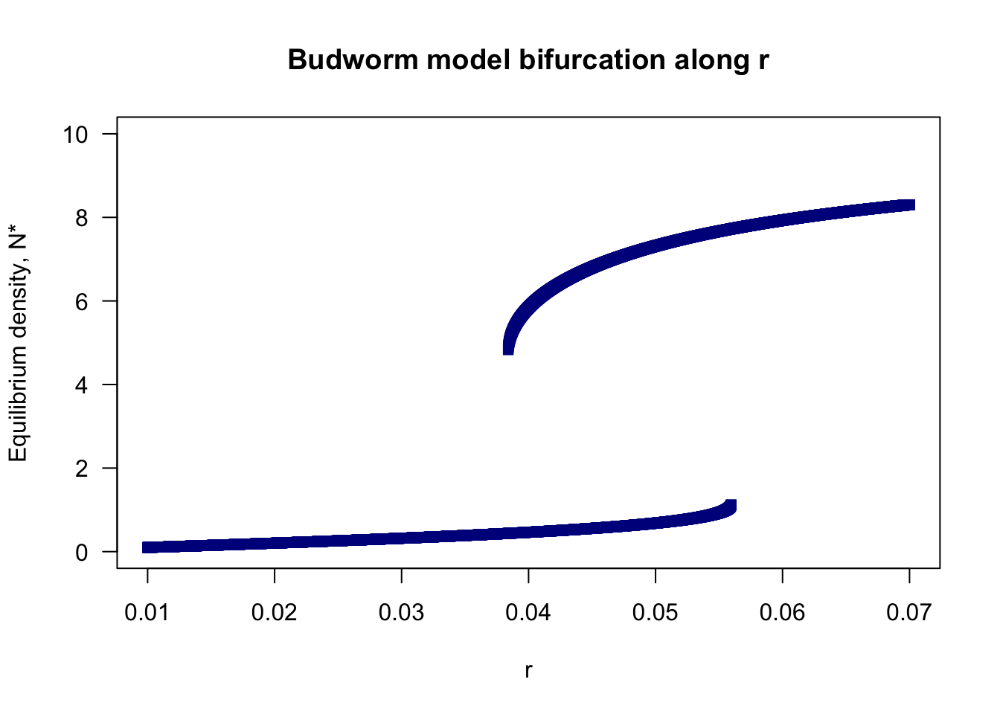
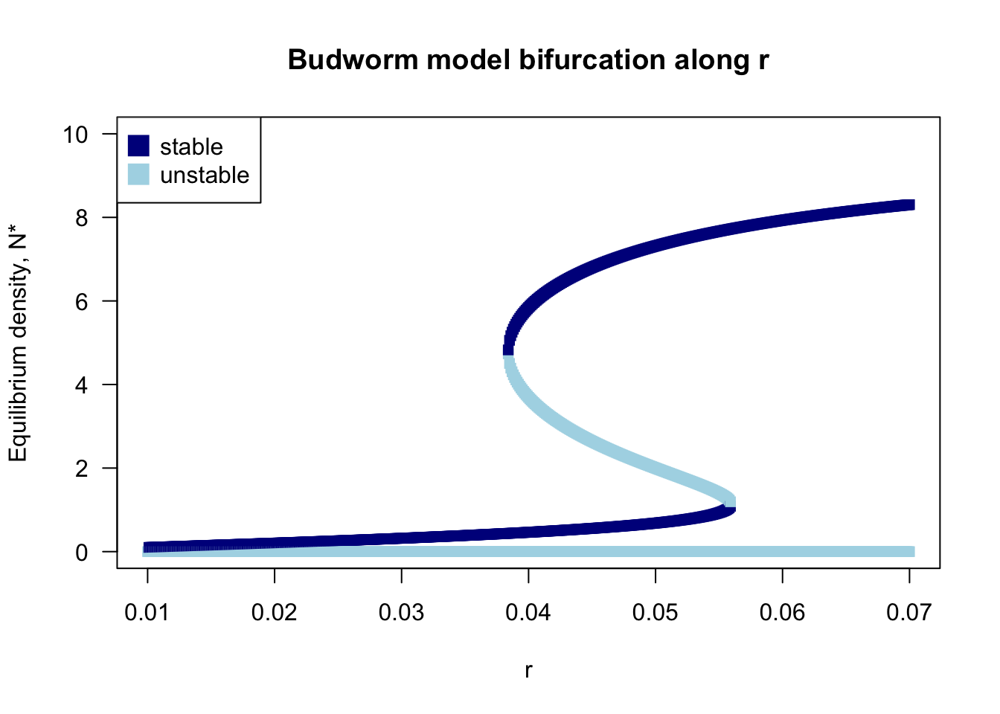
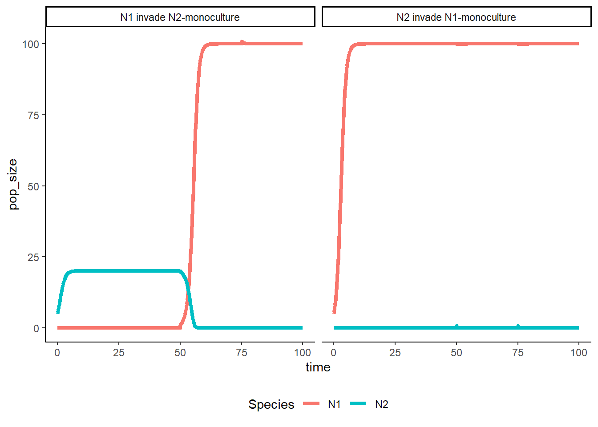
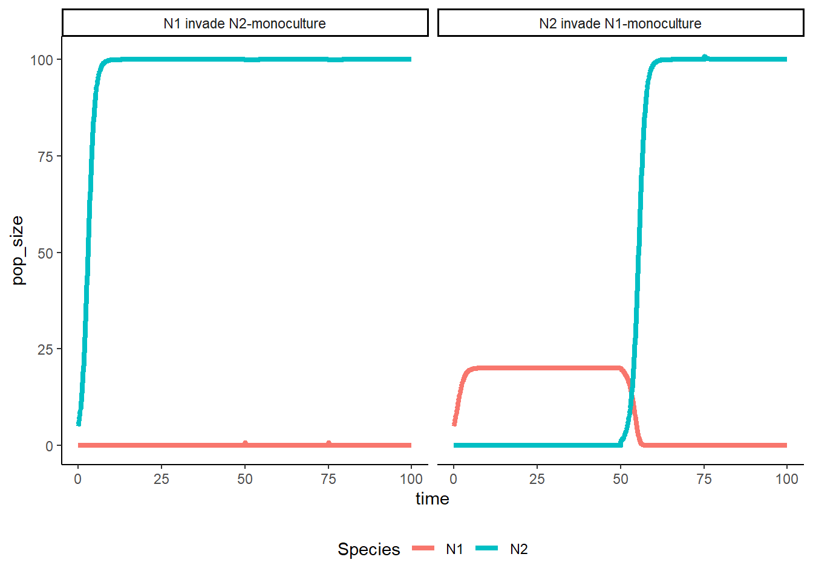
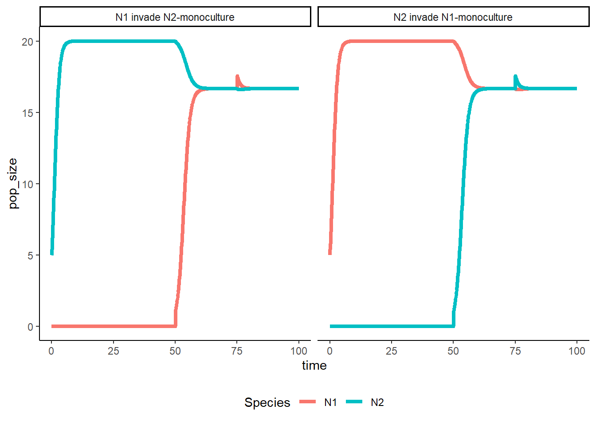
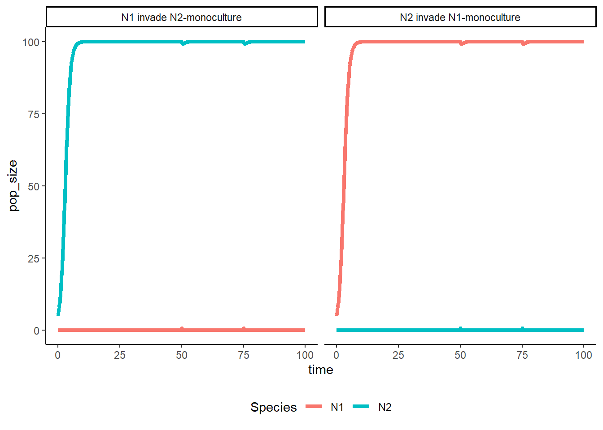

Week 10 - Lotka-Volterra competition model - Visualization of dynamics with complex eigenvalues
Part 1 - Visualize the Trajectory of 2 Species Population Dynamics
In class, we learned that the stability of a nonlinear ODE can be characterized by studying the dynamics of the “displacement for the equilibrium” (\(\pmb\varepsilon\)), which follows a much simpler linear ODE. If the linear ODE describing the dynamics of the displacement have a stable equilibrium at zero, then this indicates that the original equilibrium of the nonlinear ODE will also be stable. Consider the case where the dynamics of displacements \(\pmb\varepsilon\) can be described by the following linear ODE:
\[ \dfrac{d \vec{\pmb\varepsilon}}{d t} = \mathcal{J}\vec{\pmb\varepsilon} \]
where \(\vec{\pmb\varepsilon} = (\varepsilon_1, \varepsilon_2)^T\) and \(\mathcal{J} = \begin{pmatrix} -1 & 1\\ -2 & -1 \end{pmatrix}\). Or, we can write the linear system by two ODEs: \[\begin{align*} \dfrac{d \varepsilon_1}{d t} &= (-1)\times \varepsilon_1 + (1)\times\varepsilon_2\\ \dfrac{d \varepsilon_2}{d t} &= (-2)\times \varepsilon_1 + (-1)\times\varepsilon_2\\ \end{align*}\]
We can see that this ODE has an equilibrium at zero and the eigenvalues are as follows, which have negative real parts (indicating that it’ll be stable) with a non-zero imaginary part (indicating that it’ll rotate towards the equilibrium, as shown below).
## [1] -1+1.414214i -1-1.414214ilibrary(ggplot2)
library(tidyverse)
library(deSolve)
library(gganimate)
library(gifski)
### Model specification
ERROR <- function(times, state, parms) {
with(as.list(c(state, parms)), {
de1_dt = A * e1 + B * e2
de2_dt = C * e1 + D * e2
return(list(c(de1_dt, de2_dt)))
})
}
### Imaginary eigenvalue
### Model parameters
times <- seq(0, 10, by = 0.0001)
state <- c(e1 = 0.1, e2 = 0.1)
parms <- c(A = -1, B = 1, C = -2, D = -1)
### Model application
error_1 <- ode(func = ERROR, times = times, y = state, parms = parms)
plot(e2 ~ e1, error_1, type = "l")
abline(h = 0, lty = 3, col = "red")
abline(v = 0, lty = 3, col = "red") 
### Plot animation
p1 <- error_1 %>%
as.data.frame() %>%
ggplot(aes(x = e1, y = e2)) +
geom_point() +
geom_vline(xintercept = 0, linetype="dashed", color = "red") +
geom_hline(yintercept = 0, linetype="dashed", color = "red") +
labs(subtitle = "Time: {round(frame_time, digit = 1)}") +
transition_time(time) +
shadow_wake(wake_length = 1)
#gif1 <- animate(p1, renderer = gifski_renderer())
#anim_save(filename = "W10_dynamics_error_imaginary.gif", gif1)
Here is another example that has negative real parts (indicating that it’ll be stable) with imaginary part equals to zero (indicating that it will not rotate but directly reaches the equilibrium, as shown below).
times <- seq(0, 10, by = 0.0001)
state <- c(e1 = 0.1, e2 = 0.1)
parms <- c(A = -1, B = 1, C = 0, D = -2)
### Model application
error_2 <- ode(func = ERROR, times = times, y = state, parms = parms)
plot(e2 ~ e1, error_2, type = "l")
abline(h = 0, lty = 3, col = "red")
abline(v = 0, lty = 3, col = "red") 
### Plot animation
p2 <- error_2 %>%
as.data.frame() %>%
ggplot(aes(x = e1, y = e2)) +
geom_point() +
geom_vline(xintercept = 0, linetype="dashed", color = "red") +
geom_hline(yintercept = 0, linetype="dashed", color = "red") +
labs(subtitle = "Time: {round(frame_time, digit = 1)}") +
transition_time(time) +
shadow_wake(wake_length = 1)
#gif2 <- animate(p2, renderer = gifski_renderer())
#anim_save(filename = "W10_dynamics_error_real.gif", gif2)
Part 2 - Invasion Simulation
In the following section, we are looking at how disturbances could affect population dynamics by doing reciprocal invasion simulations.
LV_invasion <- function(r1 = 1.0, r2 = 1.0,
a11 = 0.05, a21 = 0.01, a22 = 0.05, a12 = 0.01,
runtime = 100, invasion = c(50, 75)){
### Model specification
LV <- function(times, state, parms){
with(as.list(c(state, parms)), {
dN1_dt = N1 * (r1 - a11 * N1 - a12 * N2)
dN2_dt = N2 * (r2 - a22 * N2 - a21 * N1)
return(list(c(dN1_dt, dN2_dt)))
})
}
### Event function
### N2 invade N1-monoculture
eventfun_2invade <- function(times, state, parms){
with(as.list(c(state, parms)), {
N1 <- N1
N2 <- N2 + 1
return(c(N1, N2))
})
}
### N1 invade N2-monoculture
eventfun_1invade <- function(times, state, parms){
with(as.list(c(state, parms)), {
N1 <- N1 + 1
N2 <- N2
return(c(N1, N2))
})
}
### Model parameters
times <- seq(0, runtime, by = 0.1)
state_1 <- c(N1 = 5.0, N2 = 0.0)
state_2 <- c(N1 = 0.0, N2 = 5.0)
parms <- c(r1 = r1, r2 = r2,
a11 = a11, a21 = a21, a22 = a22, a12 = a12)
### Model application w/ event function
### N2 invade N1-monoculture
pop_size_1 <- ode(func = LV, times = times,
y = state_1, parms = parms,
events = list(func = eventfun_2invade, time = invasion))
### N1 invade N2-monoculture
pop_size_2 <- ode(func = LV, times = times,
y = state_2, parms = parms,
events = list(func = eventfun_1invade, time = invasion))
### Data manipulation
Data <- as.data.frame(rbind(pop_size_1, pop_size_2))
Data$Scenario <-rep(c("N2 invade N1-monoculture", "N1 invade N2-monoculture"),
each = length(times))
### Visualize the population dynamics
Data %>%
gather(key = "Species", value = "pop_size", -c(time, Scenario)) %>%
ggplot(aes(x = time, y = pop_size, color = Species)) +
geom_line(linewidth = 1.5) +
facet_grid(~Scenario) +
theme_classic() +
theme(legend.position = "bottom")
}Plot the population dynamics under different parameter sets.
#### Run mutual invasion tests
### N1 win: N1 can invade & N2 cannot invade
LV_invasion(a11 = 0.01, a21 = 0.05, a22 = 0.05, a12 = 0.01)
### N2 win: N1 cannot invade & N2 can invade
LV_invasion(a11 = 0.05, a21 = 0.01, a22 = 0.01, a12 = 0.05)
### Coexist: N1 can invade & N2 can invade
LV_invasion(a11 = 0.05, a21 = 0.01, a22 = 0.05, a12 = 0.01)
### Priority Effect: N1 cannot invade & N2 cannot invade
LV_invasion(a11 = 0.01, a21 = 0.05, a22 = 0.01, a12 = 0.05)